여행 소개
평생에 한 번은 오로라 & 평생 한 번만 볼 수는 없는 개기일식
- 천체사진가 권오철과 함께하는 오로라, 천문학자 이명현과 함께하는 개기일식 -
설문조사에 응답해주시고, 예약금 100만원을 입금해주시면 여행 신청이 완료됩니다.
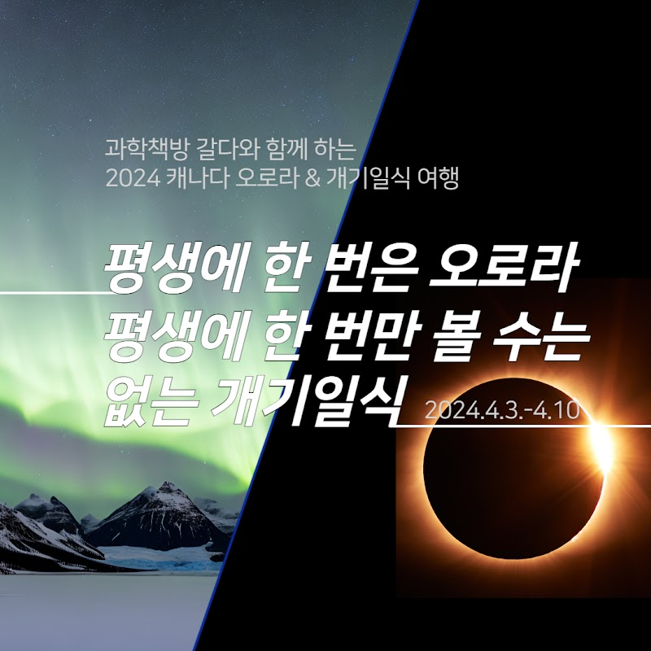
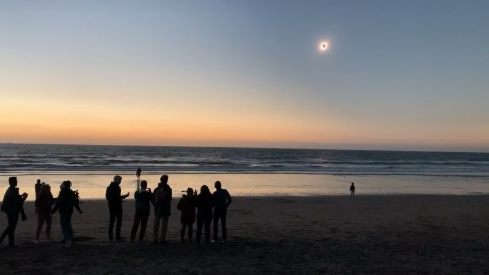
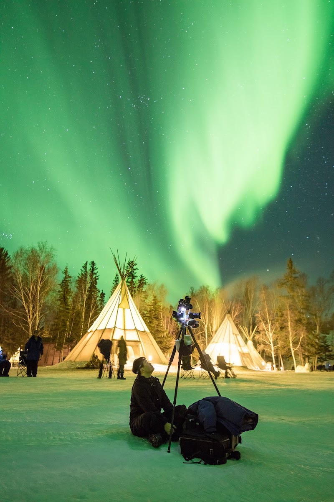
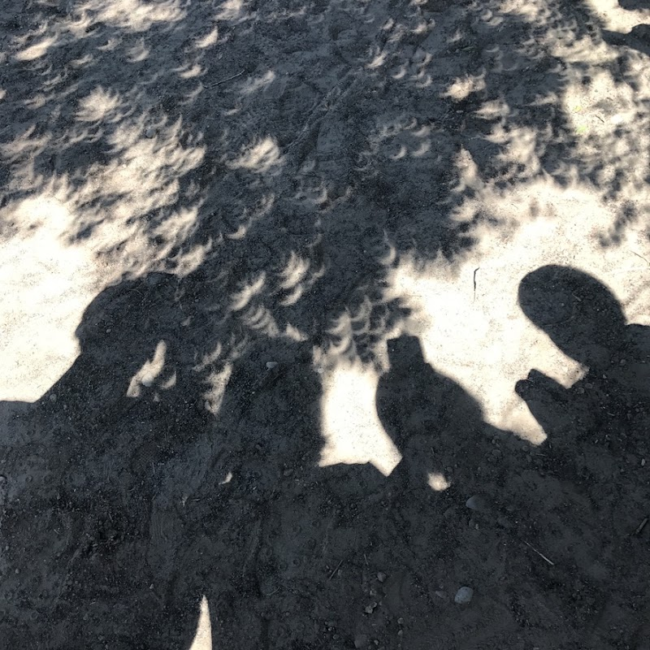
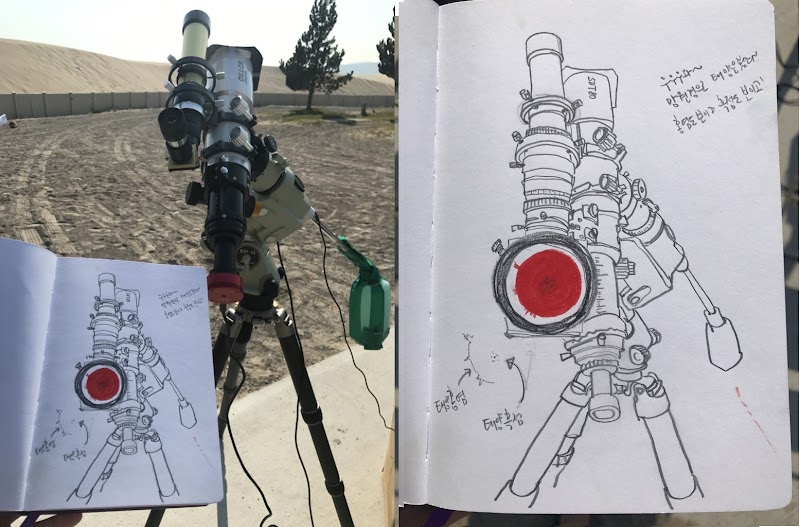
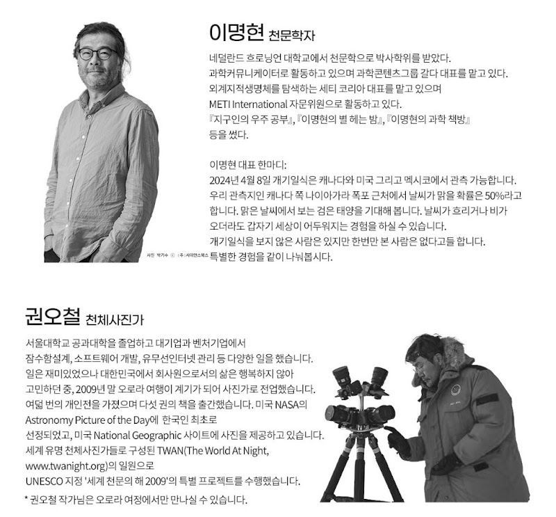
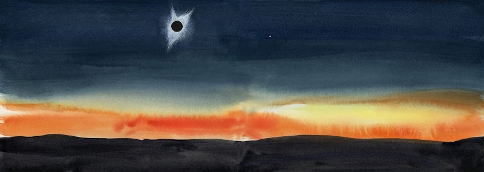

프로그램 상세 안내
여행신청을 원하시는 분들께서는 아래 구글 링크에 정보를 입력해주신 후, 예약금을 입금해주셔야 합니다.
> > 신청 바로가기 < <
여행신청은 2024.02.08(목)에 1차적으로 마감되었습니다.
현재도 신청은 가능하나 항공권 가격 상승으로, 위에 제시된 6,390,000원보다 상품 가격도 상승되고 있습니다.
상세한 가격은 여행사와 상담 후 확인 가능하니 참고바랍니다.
갈다클럽 멤버들은 멤버 할인가가 적용됩니다.
- 갈다클럽 시즌 4(2024 갈다클럽α, 갈다북클럽β, 과학인생학교) 참여자 : 25만원 할인
- 갈다클럽 시즌 1-3(2023년 진행) 참여자 : 10만원 할인
여러분의 여행 버킷리스트에 하나쯤 들어있는 ‘오로라’
인생을 바꾸는 3분, 환상적인 태양계 규모 이벤트 ‘개기일식 Total Solar Eclipse’,
천체사진가 권오철, 천문학자 이명현과 함께 해요!
밤하늘 전체를 물들이는 일렁이는 빛의 향연, 오로라. 여러분의 여행 버킷리스트가 있다면 하나쯤은 차지하고 있겠죠. 물론 여행사의 상품으로 결제를 한다면 그리 어렵지 않게 갈 수 있을 겁니다.
하지만, 그 오로라 여행을 과학을 사랑하는 사람들이 모여있는 ‘과학책방 갈다’와 함께 간다면??
게다가, 인생을 바꿀만한 경험인 ‘개기일식’과 함께 볼 수 있다면???
천문학자 이명현 대표, 이미영 여행드로잉 작가, 그리고 오로라 타이밍을 정확하게 알려주는 천체사진가 권오철 작가님과 함께 한다면????
안 갈 이유가 있겠습니까!!!!
오로라를 기다리는 느슨한 마음 + 개기일식을 마주하는 겸허한 마음
과학책방 갈다와 함께하는 오로라&개기일식 여행은 조금 느린 여행입니다. 해야 할 일이 너무 많지도 않고, 여행 일정이 빡빡하지도 않습니다.
대신 태양계 규모의 천문 이벤트들을 마주하며 인간의 하찮음을 깨닫고 인생을 성찰할 수 있는 시간을 제공합니다. 자연현상을 즐길 마음가짐을 가진 사람들이 모여 있는 과학책방 갈다와 함께 자연과 스스로의 내면을 관찰하는 기회를 가져보세요.
거기에 더해 천문학자에게 오로라와 개기일식에 대한 천문학 강의를 통해 보는 것에 깊이감을 더하고, 몇 년간 오로라 사진을 찍어온 천체사진가에게 천체사진 촬영하는 법을 배우고, 오로라가 나타나는 정확한 시간과 장소를 확인할 수 있습니다. 그리고 여행드로잉 작가에게 여행과 천문현상을 기록하는 또 하나의 방법을 배울 수 있습니다.
마지막으로 사진작가 김동재가 여행을 함께 하며 여러분의 인생사진도 찍어드립니다.
과학책방 갈다와 함께 하는 2024 오로라 & 개기일식 여행 포인트
✔️ 권오철 천체사진가와 함께하는 오로라
✔️ 이명현 천문학자와 함께하는 오로라와 나이아가라 개기일식
✔️ 나이아가라 개기일식 최적의 관측지 부근 여유있는 공간 확보
✔️ 나이아가라 폭포 및 토론토 자유여행까지 가능한 여행
✔️ 이미영 여행 드로잉 작가에게 배우는 여행과 천문현상을 기록하는 방법
✔️ 김동재 사진작가가 찍어주는 여행 인생사진
✔️ 오로라+개기일식 여행에 대한 정보를 얻을 수 있는 '사전모임'과 과학책방 갈다에서의 개기일식 '뒷풀이'
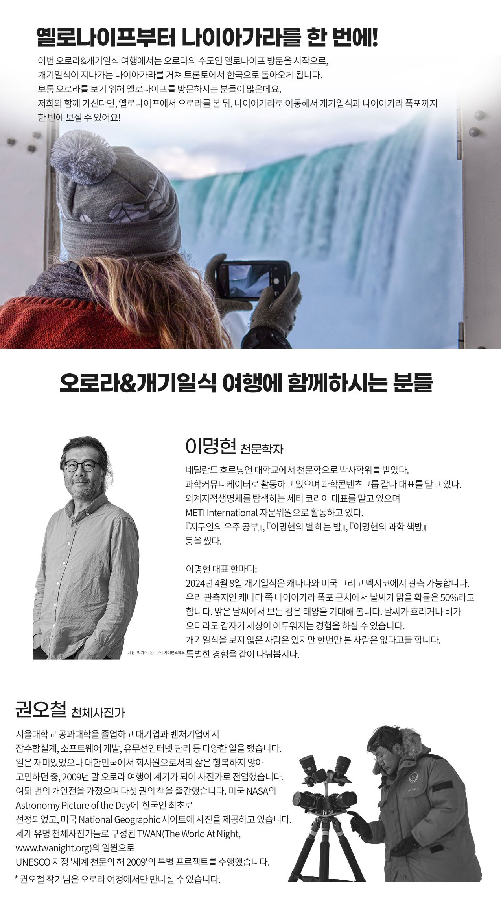
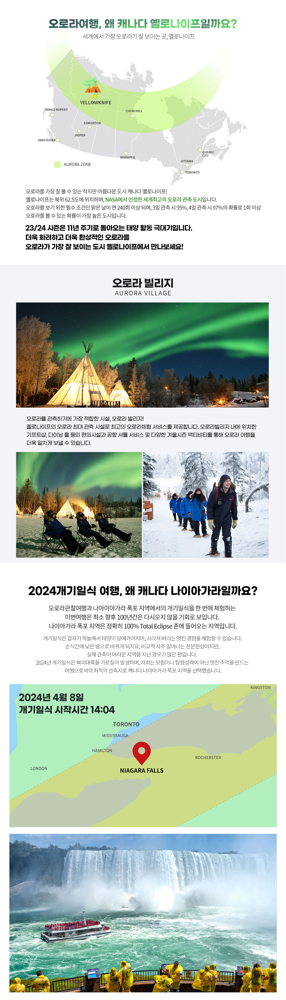
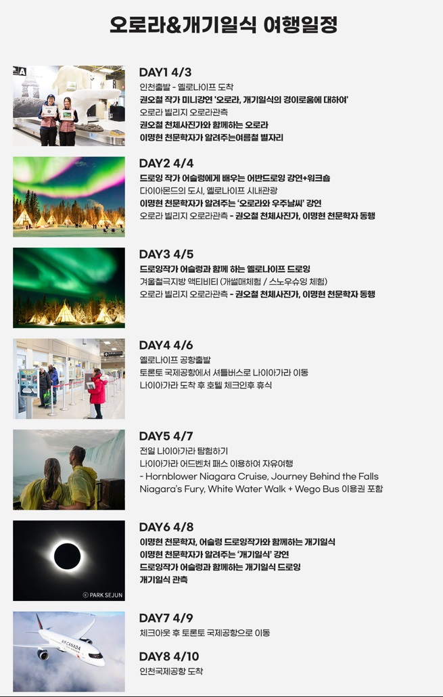
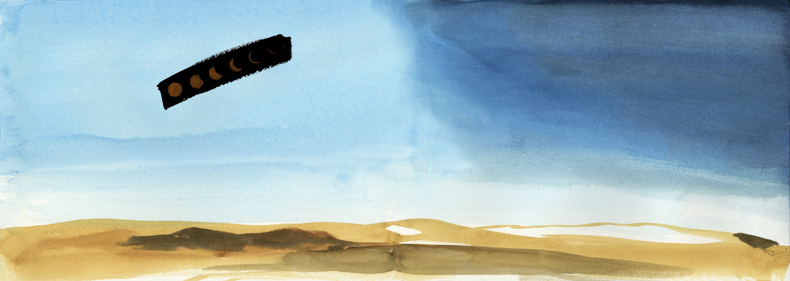
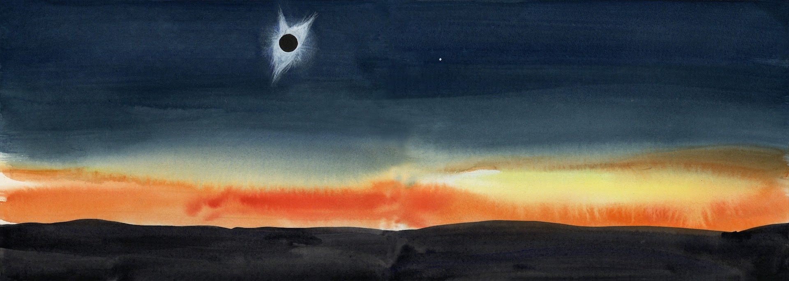
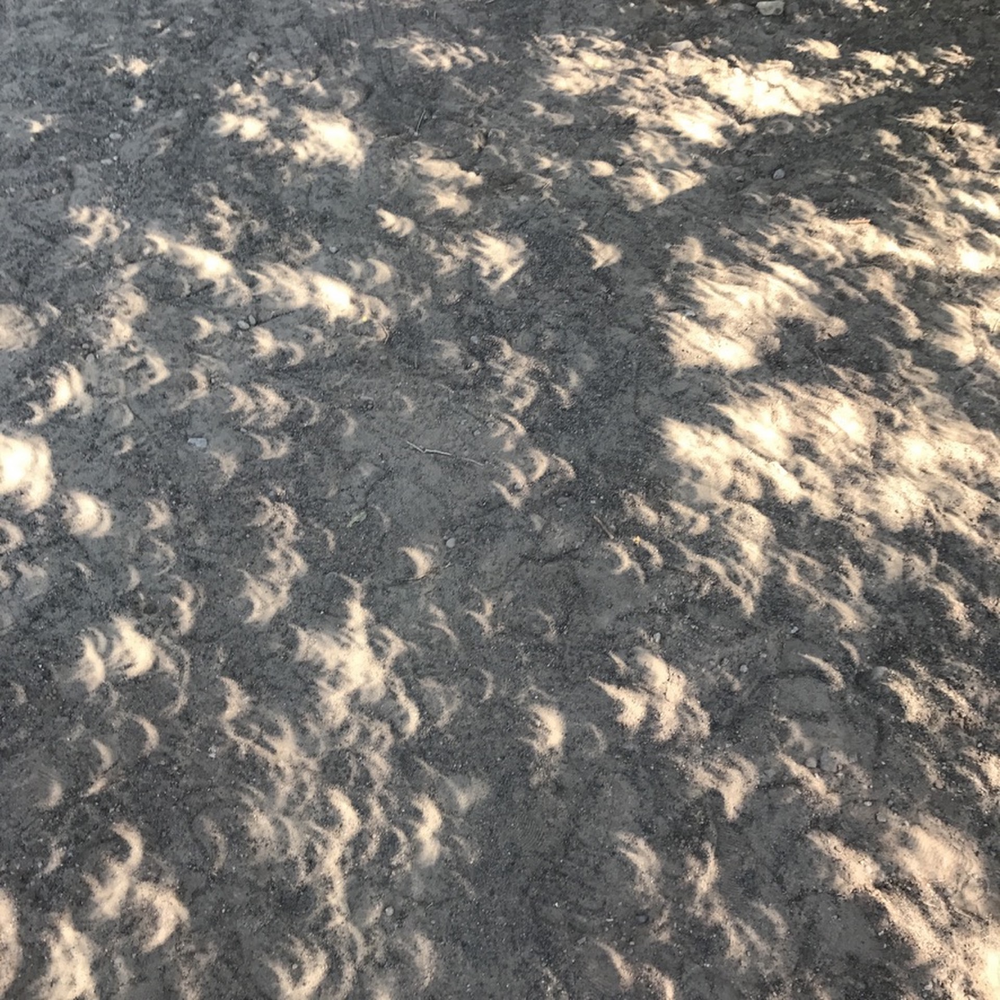
2024 캐나다 오로라&개기일식 여행 Q&A
Q. 여행에 참여하면, 오로라와 개기일식은 무조건 보게 되나요?
A. 오로라와 개기일식 모두 자연현상에 속합니다. 일정 정도의 데이터 검증을 통해서 높은 확률이 되는 곳을 선택한 일정을 준비했지만,
100%관측을 보장하는 것은 아닙니다. 다만, 오로라 관측성공률은 (지난 20년의 데이터를 기준으로) 옐로나이프 3일 정도 체류시 95%정도의 관측 성공률, 4일 체류시 97%정도의 성공률을 보여줍니다. 나이아가라 폭포지역에서의 개기일식은 구름지수는 사막지역에 비하여서는 구름 낄 확률은 반반 정도이지만, 주변에 높은 산이나 지형물이 없어 맑은 날씨만 보장된다면충분한 관측성공이 보장 될 것이고 심지어 비가 오더라도 개기일식의 가장 멋진 현상인 순식간에 밤으로 변하는 현상은 체험 할 수 있습니다.
Q. 개기일식은 언제인가요?
A. 개기일식은 매우 정확히 향후 수백년의 데이터가 예측되어 있습니다. 금년도 개기일식은 2024년 관측 예정지인 캐나다 온타리오 시간 기준 2024년 4월 8일 오후 2시 4분 부터 4시 32분까지 진행되며, 태양이 완전히 가려지는 시간은 3시 18분 18초부터 3시 32분 49초까지 지속되는 것으로 NASA는 발표하고 있습니다.
Q. 개기일식의 하이라이트는 뭔가요?
A. 개기일식은 달이 태양을 완전히 100%가리는 현상입니다. 지상에서 체험할 수 있는 가장 멋진 3대 천문현상 중 하나이며 태양이 완전히 가려지는 순간, 순식간에 낮이 밤으로 변하고 평소에 관찰이 불가능한 태양의 홍염 등을 살펴볼 수 있으며 드라마틱한 우주적 변화를 체험해 볼 수 있습니다.
Q. 2024년 개기일식을 왜 캐나다 나이아가라 폭포 지역에서 봐야 하나요?
A. 여기에 세계적인 관광명소인 나이아가라 폭포지역에서 개기일식을 관측할 수 있습니다. 2024년 개기일식은 북미 대륙을 가로지르며 발생하지만, 저희는 이왕이면 세계적인 명소와 함께 즐길 수 있는 프로그램을 준비하였으며, 특히 나이아가라 지역의 높은 인공구조물이 없는 곳을 선택해, 시야를 방해받지 않고 멋진 체험이 될 수 있도록 준비했습니다.
Q. 개기일식은 구체적으로 어디서 보게 되나요?
A. 나이아가라 폭포는 대부분의 구역이 일식의 식심이 지나가는 구역에 속하게 되지만 교통상황, 안전, 주변 건물들의 배치 등을 고려해서
저희는 넓은 개활지가 확보되어 있고 화장실 등을 사용할 수 있는 특정 지역을 준비해 놓았습니다. 전문 천문사진을 촬영하시는 분들의 경우 나이아가라 폭포를 배경으로 개기식이 진행되는 사진을 담아보시길 희망하시겠지만 개기식이 일어나는 기간 중의 교통체증, 인파, 방위, 주변의 고층 호텔 등을 고려할 때 불가할 것으로 판단합니다.
Q. 개기일식을 먼저 보고 옐로나이프 오로라를 그 뒤에 볼 수는 없을까요?
A. 아쉽지만 캐나다 옐로나이프의 오로라관측시설 운영이 4월 8일 이후로는 시즌종료, 다음 시즌으로 준비하는 기간에 돌입합니다. 해당 지역의 낮길이가 길어지고 날씨가 온화해져 구름이 자주 발생하는 기간이라 오로라 관측성공률이 낮아지는 기간이기도 합니다.
Q. 이번 기회에 오로라를 좀 더 보거나 일식관측 뒤로 일정을 연장해서 다른 지역을 여행하고 싶어요
A. 우선 오로라 관찰 기간을 좀 더 여유있게 준비하신다면 일찍 출발하여 옐로나이프에서 일식관측팀과 합류 하시는 것을 권장 드립니다. 별도 문의 주시면 일정에 맞는 항공권과 숙소를 안내 드리도록 하겠습니다. 일식관측 후 추가적인 일정을 원하신 경우도 나이아가라가 위치하고 있는 캐나다 동부지역의 토론토, 퀘벡은 물론 미국 혹은 캐나다 횡단열차 등을 통해 다양한 여행을 계획해 보실 수 있습니다. 개별적인 니즈는 여행사 지역담당자와 상의를 해주시면 합리적인 일정과 가격을 안내 받으실 수 있습니다.
여행비 포함사항
공통사항
- 전 일정 항공료 및 택스
- 여행을 함께 하는 사진작가가 찍어주는 ‘인생사진’
- 오로라&개기일식 여행에 대한 중요한 정보를 담은 ‘가이드북’
- 오로라&개기일식 여행을 함께 할 기념품
옐로나이프 지역
- 옐로나이프 공항-호텔 셔틀 서비스
- 옐로나이프 숙박 3박
- 오로라 체험 3회 (야식 1회 제공)
- 방한복 세트 렌탈 (방한 자켈, 방한 바지, 방한 부츠, 장갑, 페이스마스크)
- 오로라빌리지 서비스
- 옐로나이프 시내 관광
- 겨울철 극지방 액티비티 2가지 (개썰매체험 및 스노슈잉 체험)
나이아가라 지역
- 나이아가라 호텔 3박 (3성급)
- 토론토 공항 ~ 나이아가라 호텔 왕복 셔틀
- 나이아가라 패스
- 개기일식 관측 베뉴(venue) 제공 (개기일식 당일 간단한 점심 제공)
여행비 불포함 사항
- 일정 외 추가 액티비티
- 호텔 조식 및 전 일정 식사
- 기타 개인 지출 경비
- 현지 식당 및 호텔 봉사자 매너 팁(현지 식사 및 호텔 룸 팁은 현지 식당 및 호텔 이용 시 매너 팁이며, 필수 사항은 아닙니다.)
- 캐나다 eTA(한국 여권을 소지한 한국인이 캐나다를 방문하거나 캐나다에서 환승을 하는 경우 eTA가 요구됩니다. 항공편으로 캐나다에 입국하는 한국인들은 반드시 입국허가 신청을 받아야 합니다. 여행 계획 시에 미리 승인 받는 것을 권해 드리며, 최소 2주전에는 전자 여행 허가 승인 신청을 꼭 하시기 바랍니다.)
준비물
- 환전 : 캐나다에서는 캐나다 달러를, 미국에서는 미국 달러를 사용하니 각 나라에 맞추어 환전해 주세요.
- 세면도구 및 개인용품 : 캐나다/미국 호텔에서는 샴푸, 비누 외 세면도구와 슬리퍼 등이 구비되어 있지 않습니다. 개인적으로 준비하시기 바랍니다.
- 상비약 : 평소 복용하시는 약, 이외에 소화제, 두통제, 생리용품 등을 챙겨주세요.
- 전압 : 캐나다/미국에서는 110V를 사용합니다.
예약방법
- 과학책방 갈다 홈페이지를 통해 신청
- 구글 링크에 정보 입력 신청바로가기
- 예약금 입금 (예약금 입금 후, 예약 완료)
- 잔금 결제일 : 출발 2-3주 전 완납
- 출발 1~2주 전 예약확인서 전달 및 출발 안내
기타사항
- 2인1실 기준 성인 요금으로 상기 요금은 출발일(주말 추가요금 있음),
호텔 등급(또는 주말숙박)에 따라 요금이 달라질 수 있습니다. (싱글 비용 추가) - 12세 미만, 어린이 요금은 상품에 따라 성인 요금의 50~80%로 상이하므로 별도 문의 바랍니다.
- 항공 출도착 시간은 출발일자에 따라 다소 차이가 있을 수 있습니다.
- 상기 일정은 현지 날씨, 기후, 도로 등의 사정에 따라 변경될 수 있습니다.
- 여권 유효기간은 출발 및 입국 기준 6개월 이상 유효해야 하며, 여권 서명란에 반드시 자필서명이 되어 있어야 합니다.
- 1회 사용한 단수여권은 재사용이 불가능하므로, 반드시 재발급 받으시기 바랍니다.
- 캐나다 여행 시, 캐나다 전자 여행 허가 승인(eTA)을 꼭 받으셔야 합니다.
- 캐나다 여행 전후로 미국 방문 시에는 미국 ESTA 또는 미국비자가 꼭 필요 합니다.
- 입국심사는 입국심사관의 고유권한이므로 당사가 책임지지 않습니다.
- 항공편 변경/지연 등으로 추가비용 발생시 고객본인께서 직접 부담하셔야 합니다.
- 옐로나이프에서는 핸드폰 기종 및 통신사에 따라 3G 로밍 및 데이터로밍 서비스가 원활하지 않을 수 있습니다.
반드시 해당 통신사로 문의 후 사용하시기 바랍니다. - 오로라 관측은 머무는 일정이 길수록 성공확률이 높아집니다.
- 오로라빌리지는 4월 6일까지 운영하므로, 4/3 출발 대신 4/1에 먼저 출발하실 분들은 별도 문의 필요
- 기후변화로 옐로나이프의 날씨도 변화가 심하고 구름낀 날이 많아지고 있습니다.
오로라 폭풍의 감동을 꼭 느껴보고 싶다면 3일로는 부족할 수 있습니다.
권오철 작가는 3월 초부터 옐로나이프 한달살기 예정입니다.
조금 더 일찍 출발하실 분들은 여행사와 상담하시기 바랍니다. - 귀국일인 4월 10일은 인천공항 도착이 오후 5시 반 예정으로 국회의원 선거 투표가 불가능합니다.
사전투표일은 4월 5~6일로 역시 어렵습니다.
일찍 가서 오로라만 보고 일찍 들어오거나, 늦게 출발해서 개기일식만 보고 오실 분들은 여행사와 상담하시기 바랍니다. - 4월 초 나이아가라 폭포 지역의 날씨 통계를 보면 구름이 낄 확률이 반반 정도입니다.
이때에는 달에 가려지는 태양을 직접 보지는 못하지만 낮이 갑자기 밤이 되는 것은 느낄 수 있습니다.
- 예약금은 1인 기준 100만원 입금 후, 여행사의 안내에 따라 항공료(실시간 항공권 발권) 입금이 필요합니다.
- 프로그램의 항공사의 규정으로 실시간으로 발권합니다.
- 상품가격은 따라서 현재 최저가 이코노미 클래스 항공권의 항공료를 기준으로 안내드린 것이며,
항공권의 예약시점과 클래스에 따라서 가격이 변동될 수 있다는점을 양지 바랍니다. - 이코노미 클래스 이외에 프리미엄 이코노미 클래스, 비즈니스 클래스의 좌석 업그레이드는 별도 문의 남겨 주시기 바랍니다.
(발권 이후 변경 시 항공운임 차액금과 변경 수수료가 함께 부과 됩니다.) - Pre & Post 투어를 계획하실 분들은 항공권을 발권하기 전 예약을 하셔야 합니다.
(발권 이후 변경시 항공운임 차액금과 변경 수수료가 함께 부과 됩니다.) - 현재 나이아가라 지역의 호텔은 3성급 호텔을 기준으로 나이아가라에서 최대 1시간 이내 거리의 호텔을 준비중에 있으며,
1월 30일까지의 예약인원의 아웃라인이 나오는데로 확정해서 안내드릴 것입니다.
(높은 수요로 인하여 호텔이 2~3곳으로 나뉘어 질 수 있습니다.) - 나이아가라 지역 호텔의 취소료가 예약 확정 이후 100% 취소료가 부과되는 특별규정이 적용되고 있습니다.
따라서 예약금 입금 이후 여행 취소 및 항공권 환불 수수료에 대해서는 별도 공지 예정입니다.
취소 및 환불 약관
- 여행개시 22일전(~22)까지 통보시 : 취소 수수료 10만원
- 여행개시 15일전까지(21~15) 통보시 : 여행요금의 20% 배상
- 여행개시 8일전까지(14~8) 통보시 : 여행요금의 30% 배상
- 여행개시 2일전까지(7~2) 통보시 : 여행요금의 50% 배상
- 여행개시 1일전-당일 통보 시 : 여행요금의 100% 배상
- 항공권은 발권 후 취소 및 변경 시 수수료가 부과되며, 각 항공사의 규정에 따릅니다.
- [취소/환불/변경] 본 상품은 국외여행 약관 특별규정이 적용됩니다.
- 예약변경, 취소, 환불 규정은 본 상품규정에 기준합니다. - [취소/환불/변경] 예약과 서비스의 취소와 변경 등의 접수일자는 근무일 기준입니다.
- 휴일에 취소, 변경 접수는 휴일 이후, 최초 근무일에 접수로 간주됩니다.
본 여행의 콘텐츠는 과학문화콘텐츠를 큐레이션하고 제안하는 과학콘텐츠그룹 갈다가,
여행 전반에 대한 준비와 지원은 테마여행 전문 여행사인 파로스 여행사가 함께 합니다.
여행신청을 원하시는 분들께서는 아래 구글 링크에 정보를 입력해주신 후, 예약금을 입금해주셔야 합니다.
> > 신청 바로가기 < <
신청마감 : 2024.02.08(목), 선착순 마감
갈다클럽 멤버들은 멤버 할인가가 적용됩니다.
- 갈다클럽 시즌 4(2024 갈다클럽α, 갈다북클럽β, 과학인생학교) 참여자 : 25만원 할인
- 갈다클럽 시즌 1-3(2023년 진행) 참여자 : 10만원 할인
- 현재 신청 가능한 갈다클럽을 참고해주세요! (과학인생학교 1/30일 시작, 삼청사이언스클럽 1/23일 시작, 우리동네 코스모스 '대전편' 1/21일 시작, 갈다북클럽)